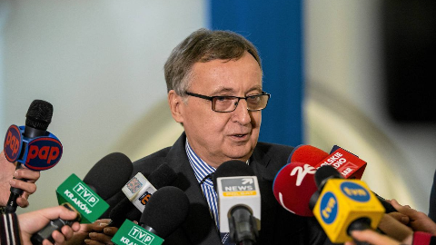
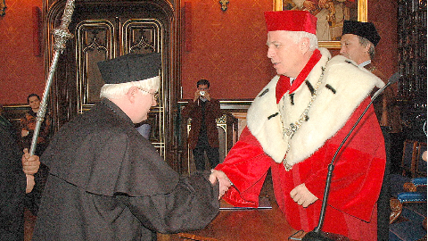

| Zdjęcie | Imię i nazwisko | Kadencja | Opis |
|---|---|---|---|
| Prof. dr hab. Jacek Popiel | 2020 - obecnie | Obecny rektor UJ, specjalista z zakresu teatrologii. Wspiera rozwój badań i współpracę międzynarodową. | |
|  | Prof. dr hab. Wojciech Nowak | 2012 - 2020 | Rektor, który przyczynił się do rozwoju infrastruktury uczelni oraz promował innowacje w nauce. |
|  | Prof. dr hab. Karol Musioł | 2005 - 2012 | Rektor, znany z wprowadzenia UJ do grona czołowych uczelni europejskich. |